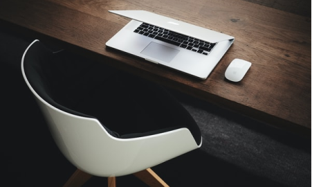

<aside class="sidebar">
  
  <div class="sidebar__container">
    <div class="avatar-block">
      
    </div>
    <p class="sidebar__name">Дмитрий Валак</p>
    <p class="sidebar__role">блог front-end разработчика</p>
    <div class="sidebar__row">
      <a href="#">
        
      </a>
      <a href="#">
        
      </a>
      <a href="#">
        
      </a>
    </div>
    <hr class="divider" />
    <p class="sidebar__description">
      Front-end разработчик. Практик верстки сайтов. Созданием сайтов занимаюсь
      с 2012 года. Работал в нескольких ИТ компаниях и наработал более 10 000
      часов в создании сайтов различной сложности.
    </p>
    <hr class="divider" />
    <div class="sidebar__btns-row">
      <button class="btn btn__secondary">Мои работы</button>
      <button class="btn btn__primary">Написать мне</button>
    </div>
  </div>
</aside>
